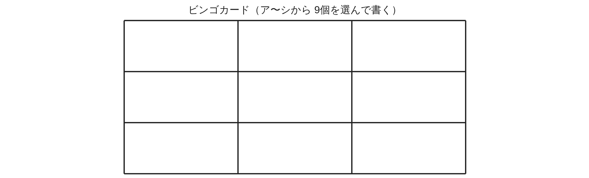

ペア学習
第6時 式の計算ビンゴで、計算をたしかなものにしよう
第5時の重要語句から、1人1問ずつ、言葉を選んで出題する。
聞かれた人は、その言葉の意味を、自分の言葉で言う。
分数の形
分子
分母
符号
代入
式の値
式の計算 第6時 式の計算ビンゴで、計算をたしかなものにしよう
めあて
第6時 式の計算ビンゴで、計算をたしかなものにしよう
学習課題
式の計算ビンゴをしよう。
①
ア〜シの 12個から 9個を選び、カードの好きなマスに書く。
②
先生が引いた番号の問題を、演習プリントで計算する。
③
答えがカードにあれば ○ をつける。
縦・横・ななめの 1列がそろえば ビンゴ！
④
ビンゴになったら、その列の問題の途中式を、班の人に説明する。
式の計算 第6時 式の計算ビンゴで、計算をたしかなものにしよう
学習課題のまとめ
第6時 式の計算ビンゴで、計算をたしかなものにしよう
【ビンゴの答え】どれも、これから出す問題の答えである。
| ア | イ | ウ | エ | オ | カ | |
|---|---|---|---|---|---|---|
| 答え | −6y | −3x−2y | 19 | −10x³y² | 3次式 | (11x+9y)⁄12 |
| キ | ク | ケ | コ | サ | シ | |
|---|---|---|---|---|---|---|
| 答え | 4ab | −5a+2b | 3a+7b | 3a² | 49a² | 7x+7y |

式の計算 第6時 式の計算ビンゴで、計算をたしかなものにしよう
ことば
第6時 式の計算ビンゴで、計算をたしかなものにしよう
① 単項式の … かけ合わされている文字の個数。
多項式は、最大の次数。
② は、係数を計算して、1つの項にまとめる。
③ ひき算は、ひく式の各項の を変えて、かっこをはずす。
④ 多項式に数をかける … 。数でわる … をかける。
⑤ 除法 … の形にして する。
乗除の混じった式は、1つの分数に。
⑥ 式の値 … 式を簡単にして、負の数はかっこをつけて する。
式の計算 第6時 式の計算ビンゴで、計算をたしかなものにしよう
ことば
第6時 式の計算ビンゴで、計算をたしかなものにしよう
① 単項式の次数 … かけ合わされている文字の個数。
多項式は、最大の次数。
② 同類項は、係数を計算して、1つの項にまとめる。
③ ひき算は、ひく式の各項の符号を変えて、かっこをはずす。
④ 多項式に数をかける … 分配法則。数でわる … 逆数をかける。
⑤ 除法 … 分数の形にして約分する。
乗除の混じった式は、1つの分数に。
⑥ 式の値 … 式を簡単にして、負の数はかっこをつけて代入する。
式の計算 第6時 式の計算ビンゴで、計算をたしかなものにしよう
例題
第6時 式の計算ビンゴで、計算をたしかなものにしよう
次の計算をしよう。
（途中式を書いて、班の人に説明できるようにしよう。）
（1）( a−b)−( a− b)
式の計算 第6時 式の計算ビンゴで、計算をたしかなものにしよう
例題 解答
第6時 式の計算ビンゴで、計算をたしかなものにしよう
（1）次の計算をしよう。
(6a−b)−(2a−5b)
＝6a−b−2a+5b
＝4a+4b
式の計算 第6時 式の計算ビンゴで、計算をたしかなものにしよう
例題
第6時 式の計算ビンゴで、計算をたしかなものにしよう
次の計算をしよう。
（途中式を書いて、班の人に説明できるようにしよう。）
（2）(− b)²× a÷ ab
式の計算 第6時 式の計算ビンゴで、計算をたしかなものにしよう
例題 解答
第6時 式の計算ビンゴで、計算をたしかなものにしよう
（2）次の計算をしよう。
(−2b)²×3a÷6ab
＝4b²×3a÷6ab
＝
4b²×3a
6ab
＝2b
式の計算 第6時 式の計算ビンゴで、計算をたしかなものにしよう
考えよう
第6時 式の計算ビンゴで、計算をたしかなものにしよう
①
選んだ問題の番号と式、まちがえやすいところ。
（正しい計算と、ありがちなまちがいを、ならべて書こう）
②
まちがえないための、くふうを書こう。
③
ア〜シのどれかを答えにする問題を、1つつくり、
友達に解いてもらおう。
発展
3×3 のカードで、ビンゴになる列に入る回数がいちばん多いマスは、どこだろう。
そのわけも考えよう。
式の計算 第6時 式の計算ビンゴで、計算をたしかなものにしよう
振り返り
第6時 式の計算ビンゴで、計算をたしかなものにしよう
今日のめあて
次数
同類項
分配法則
逆数
約分
代入
今日わかったことを、ペアで1つずつ言い合おう。
ワークシートと演習プリントを出そう。（未完成でも出す）
式の計算 第6時 式の計算ビンゴで、計算をたしかなものにしよう